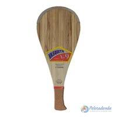
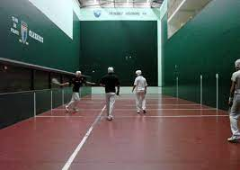
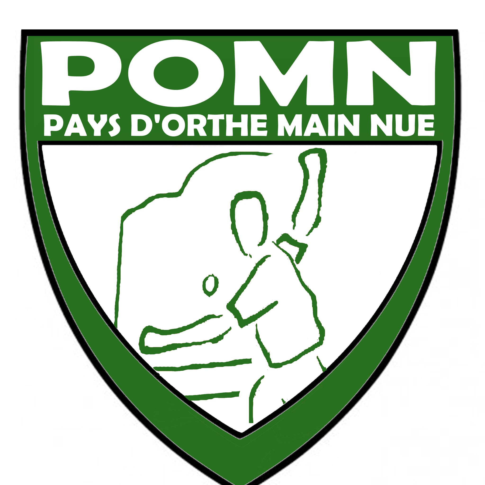
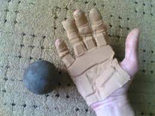

1. Histoire
La pelote est un jeu très ancien. On le retrouve dans de nombreuses civilisations telles que celles des Grecs, des Mayas, des Romains et des Gaulois. Mais c’est au Pays Basque que la pelote a survécu lorsque la pratique du jeu de paume s’est perdue au XVIIème siècle. C’est également là que ce jeu a subi les transformations et les adaptations les plus radicales, avec notamment le développement de nombreux dérivés.
Le peuple basque s’est très bien adapté aux jeux de balle dont il a hérité du passé, et alors qu’ils disparaissaient dans presque tous les pays, les Basques ont continué et avec le temps ils ont adapté, perfectionné les jeux de paume en trinquet pour pratiquer “leur pelote”. Les Basques jouent avec un gant de cuir et une grosse pelote, c’est le Pasaka. Puis vers 1800, la commercialisation du caoutchouc apporte une évolution importante pour la pelote. De plus, les pratiquants jouent contre des murs, les jeux de blaid ou indirects sont apparus. Les gants de cuir ont été remplacés par le Xistera (gant d’osier) plus léger et plus maniable pour la pratique de la pelote.
La pelote basque regroupe plusieurs jeux traditionnels issus du Jeu de paume :
- Le Xare est apparu vers le milieu du XIXème siècle.
- Dans le courant du XIXème siècle un jeu dérivé du Laxua est créé, c’est le Rebot.
- Entre 1880 et 1890 les gens jouent au Limpio ou Joko Garbi.
- Le Grand Xistera, inventé en Argentine, apparaît en France en 1894.
- La paleta et la Pala Ancha (Paleta Gomme) commencent à être pratiquées dans les années 1930.
En 1921, la fédération française de pelote basque (FFPB) est créée, la fédération internationale de pelote basque voit le jour quant à elle, en 1929 et les premiers championnats du monde se déroulent à Saint Sébastien en 1952. Les premiers statuts ne sont déposés à la sous-préfecture de Bayonne qu’en 1953. D’autre part, la pelote basque a figuré trois fois aux Jeux Olympiques en sport de démonstration : en 1924 à Paris, en 1968 à Mexico et en 1992 à Barcelone.
Pendant la guerre, quelques femmes jouent à la pelote avec les hommes. Ce n’est qu’en 1975 que le premier tournoi fédéral féminin est organisé. Dans les temps anciens la pelote ne se pratiquait que sous forme de défis. Ce n’est qu’en 1921, lors de la création de la FFPB que la pelote est réglementée.
2. La pelote basque et moi
J'ai commencé à jouer à l'âge de 5 ans. Chez nous, ce sport est un des plus pratiqués avec le rugby. Les enfants s'y inscrivent très jeunes et c'est une culture.
En 2007, me voilà titulaire de ma première licence au sein du club de mon village : le Fronton Saint Lonnais. Mon histoire d'amour avec la pelote durera 12 belles années.
Au cours de ces 12 ans, je me suis entraînée et ai remporté des titres dans plusieurs disciplines. J'ai d'abord appris à jouer en place libre gomme pleine (comme on peut voir sur la photo ci-dessous). En 2012, 5 ans plus tard, me voilà sacrée Championne des Landes dans cette discipline avec ma coéquipière. Quelle fierté du haut de mes 10 ans... 🤩

Mon parcours ne s'arrête pas là. J'ai connu la grande transition de le monde de la pelote basque. À partir de 2013-2014, la fédération nous avertit que la pelote évolue et qu'il faut s'entraîner pour la pelote "moderne". Il faut alors tout réapprendre : apprendre à jouer sur un tout nouveau terrain, apprendre à jouer avec des instruments totalement différents... Nous voilà entrées dans l'apprentissage de la baline.
La baline est une discipline de la pelote basque se jouant en terrain intérieur (mur à gauche ou bien trinquet). Nous ne jouons plus avec des palas mais avec des paletons. La pelote change également : c'est maintenant une balle creuse et très vive (imaginez-vous jouer avec une balle rebondissante). Les techniques de frappe ne sont plus les mêmes, la vision du jeu change également, les stratégies tout autant... Bref, nous repartons au niveau 0. Pour autant, je gagne le Championnat des Landes l'année suivante, en 2015.
 Mes titres ainsi que mes nombres qualifications en finale nous permettent, ma coéquipière et moi, d'accéder aux Championnats de France, durant lesquels nous nous débattrons 3 années consécutives.
Malheureusement, une blessure me contraint à arrêter car mon retard était devenu bien trop important 😔. Aujourd'hui, je continue de m'entraîner dès que je rentre dans le Sud. Ce sport est régional et les équipements ne se trouvent malheureusement pas partout... La pelote restera à jamais MON sport.
3. Main nue
Le club de Main nue
POMN (Pays d'Orthe Main Nue) est le club de Main nue de mon village. Comme l'indique son nom, cette discipline se joue à main nue. Les joueurs disposent de pansements à se coller sur la main et jouent avec une pelote gomme pleine.
Contrairement à mon club de pelote avec instruments, le club de Main nue survit avec les années et obtient de glorieux résultats. Il compte beaucoup de licenciés et les nouvelles recrues ne manquent pas. De voir nos traditions perdurer me rend fière.
Pour la petite histoire, 3 joueurs formés à POMN depuis leur plus jeune âge ont intégré les Championnats du Monde de Pelote basque : Amédée Lafitte, Étienne Lafitte et Brice Callejas.